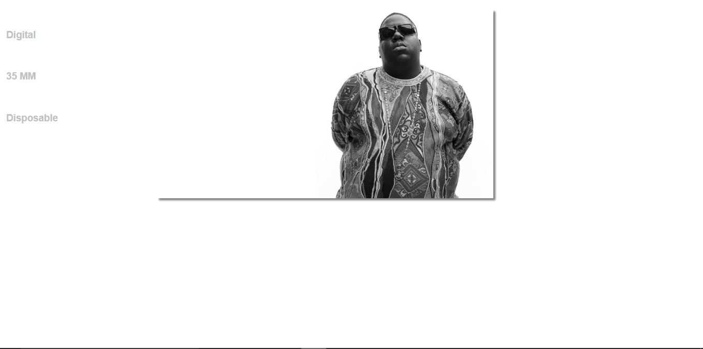
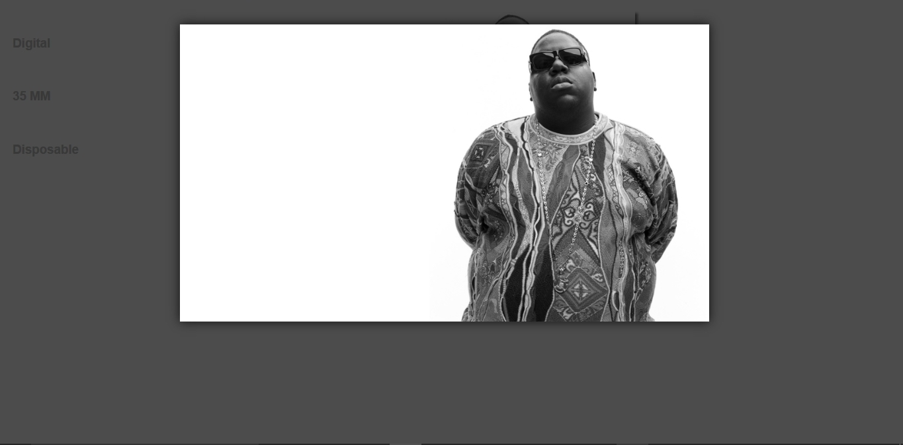
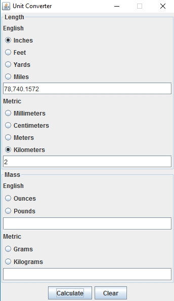
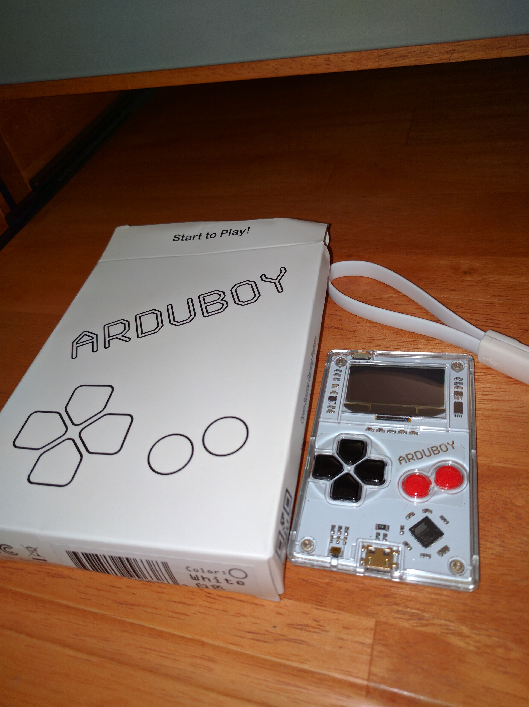
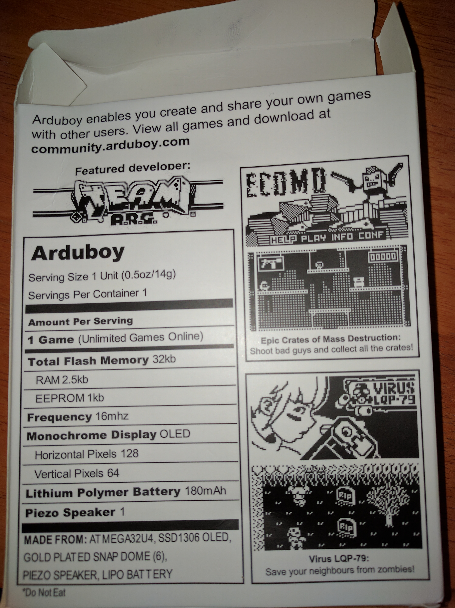
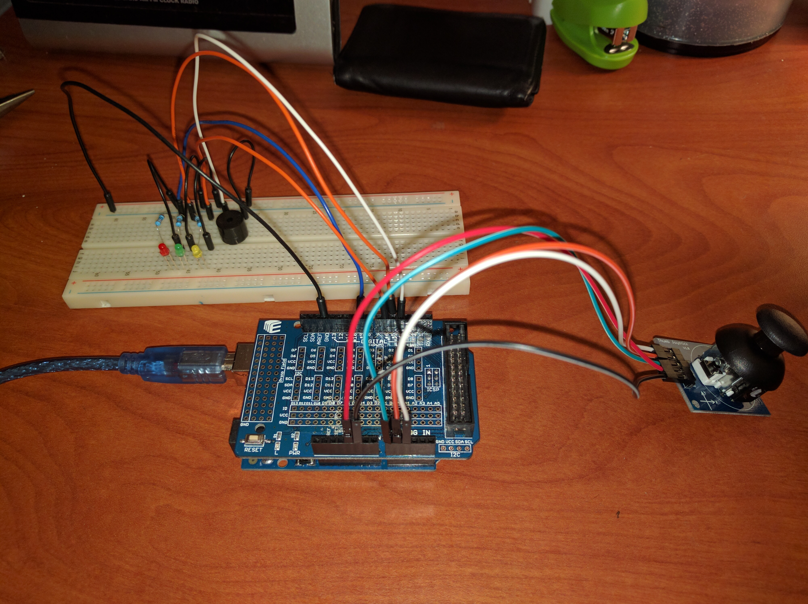
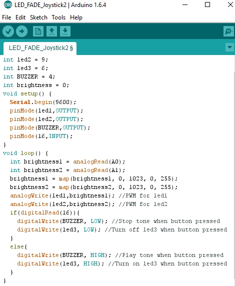

Post Library
February 14, 2017
Happy Valentine's day fellow techies! I consider you all to be my valentines this year and I can only hope you do the same for me. So now that I finally got the websites I had been working on either up and running or into someone else's hands, I once again became in need of a new project to occupy my time. As it turns out, I have a bit of a knack for biting off more than I can feasibly chew, but as I like to say, think big, start small! That being said, I have done exactly that, eagerly thinking inexplicably big and unabashedly started laughably small. Nevertheless, I still feel as though both of the two projects I have recently "started" are well within an ascertainable distance from my current skill set and would only require a bit of time and effort to actually get up and running. I say that now, but I'm sure in 30 years when I finally give up on at least one of these projects entirely I'll realize how dumb I actually am for thinking I would ever have the time and patience to accomplish all this entirely on my own. But here goes nothing!So the first idea I had was in the wake of all this fuss over what is and isn't considered "fake news" as if I would ever whole-heartedly believe any article I circumstantially encounter on Facebook from any other than a few reputable sources, at least without cross-referencing or at least investigating the credibility of the source itself. But I digress, I came to the conclusion that I would very much like a piece of software that would a) compile all of the most recent articles from only sources widely considered to be reputable and minimally-biased, b) allow my to cross-reference any article I found with questionable content to see if anyone else has reported on the subject, c) provide information about all of the trusted sources and links to their respective websited. I even began to write the code for the program to parse the content from the web into objects, but have realized that in order to sift through each page and find the content for every single article from every section of what's shaping up to be quite a decent number of sources is going to be an incredibly tedious and monotonous process, that I am eagerly looking forward to torturing myself with!
The second project is both much more long-term and far-fetched, but I still think it's a pretty good idea that I honestly am surprised that no one has done yet. So there's another job fairly coming up on Friday, and I'm really in desperate need of a haircut prior to then, I didn't get my hair cut before the job fair in the fall and I haven't stopped regretting it ever since. The only reason I neglected to get my hair cut was because I don't particularly enjoy the act of paying a stranger to awkwardly hold a conversation with me whilst performing a task that often takes less time than the combined commutes to and from the barber and the time spent waiting in the lobby. So, needless to say, I'm trying to figure out ways around going to a barber or a salon and having to be uncomfortable for like 20 minutes. Then I started to wonder, Why isn't there a machine that can eliminate the commute and the human element (discomfort as well as error)? I did some research because I couldn't believe no one else has had that idea yet, and it seems like this isn't exactly an original idea, but the market for it isn't exactly there to mass produce such a device. I guess normal people don't hate getting their hair cut that much but that doesn't seem likely. If you or any of your friends is a normal person tell them to email me, I've got several questions for you. Anyways, upon further investigation, apparently there was a set of clippers that used GPS tracking and to replicate a hairstyle from a database that the user selects in an app. I guess the GPS has an audio interface, of some sort, or feedback/guidance for completing the haircut. It comes with earbuds which house the GPS, so I'm not really sure what those do, but it seemed like a pretty cool idea, especially with a few added automated modifications! I reached out to the manufacturer, but their site appears to have been shut down or something so I'm not sure what that story is but either way it got me thinking, maybe a little too much.
Leave it to me to unnecessarily overcomplicate an already complicated problem, right? Well, I thought that if the clippers were already using GPS anyway, then a system could use information from the GPS to automatically move the clippers to every location to complete the haircut and all the user would do is pick a haircut, strap on the robot-barber, click go and wait 20 minutes to become a new man! Of course, this would likely only work with short haircuts, and clippers. I thought about trying to rig up a system of 3D scanners that send real-time images of the users hair to the computer and comparing them to a database of 3D scans of salon-quality haircuts and compensating for a margin of error, but even that would be tough to do with a pair of scissors. I'm considering maybe trying to implement a robot arm, but I would need to rethink my design for having it circle around the user. Right now what I'm thinking of is trying to turn this into a big Arduino project since it's been a while since I've gotten to play with mine lately. My design right now looks like a big sort of ring that has a stepper motor on opposite sides of the ring, attached to a track on support beams that raise and lower the ring. On the outside of the ring will be another track with another stepper motor responsible for spinning the ring. On the inside of the ring will be a beam pointing to the center of the ring and a stand for the clippers, positioned vertically, and attached to a spring pushing the entire verticle component towards the center if the ring. Depending on how complicated this project could end up becoming, I may want to consider using a mobile platform or installing an onboard computer, but for now, the Arduino Uno should be up for the task! I would mount one on each set of motors on either support so the wire leads won't get pulled out. I'm hoping to hear back from that company about the GPS hair clippers because I really want to see how they work or at least talk to someone about them, I thought they were a really cool idea. I think with the right amount of time and effort, I could come up with a product that I think people would buy, I think there really is untaapped market potential here waiting to be dug up. Either that or I'm just wasting my time, but hey at least it's keeping us both entertained for the time being. Thanks for stopping by, I'll be sure to keep you updated on all the fiascos that will inevitably ensue from this point forth.
January 19, 2017
Hello and happy new year! I apologize for my brief hiatus from posting, between finals and the holidays, I couldn't find the time to get back to the blog. However, let me assure you I was not without tech. During winter break I was actually hired to an unpaid internship! Granted, it was by my mom and iit was for the position of IT supervisor of my own household, I still take pride in my position. All jokes aside, I did have my hands full for the majority of break. My mom had an old HP tower running Windows XP that hadn't been touched since she got her new Asus notebook and she wanted me to put all the old pictures onto a flash drive so she could pretend to look at them ever. She also had a stack of floppy disks about two feet high that she wanted me to go through which brought me way back to 1999 when I found an old pinball game me and my siblings used to play on my grandad's computer when we were kids. Not all that exciting, I know, but afterwards, since we had no other use for the tower, she wanted me to wipe the hard drive to prepare it for recycling. Although still not all that exciting, it was my first ever time going through this process so I was fairly excited about it.Aside from that, my mom kept complaining to me that her printer wasn't working. By that she actually meant that the buttons on the printer were no longer responding like they used to but she refused to print from her laptop so for all intents and purposes the printer was essentially not working. So to appease her, I set about to try and troubleshoot the problem which escalated into a world of headaches. The initial problem was that the printer software was no longer installed on the laptop, which doesn't sound like that big of a deal, but when I went to reinstall the program, the installation froze and instructed me to update Windows and try again. Still, not that big of a deal, so I ran Windows Update (which hasn't happened since the last time I was home on break) and it amounted to 70+ updates. But when I tried to download and install the updates, the installer wouldn't budge past 0%.... for two days. I looked into the issue a bit further and it appears there was some issue with Windows 7 SP 1 that caused Windows Update to perform slowly or not at all. So I manually downloaded that particular update and attempted to install it, but got a strange error. I did some more digging and came across what I deemed to be the actual solution. If there are too many cached files in the Windows Update system logs, it could freeze the process altogether. So I cleared out the cache and tried to install the update again, and it worked! But when I ran Windows Update again it wouldn't locate or even identify any updates. For the sake of my own sanity I had to take a day off and gather my thoughts, and in the meantime my mom used the printer snd found that somehow whatever I had done had remedied the original issue. So for the time being I considered the problem to be solved. Next time I go home I'm going to take another look at the machine and try to troubleshoot again, but for obvious reasons, I'm in no rush whatsoever to do so.
In my downtime from pulling out my hair with the laptop, my mom had an old Acer netbook just sitting on the bookshelf collecting dust. I asked if I could take it back to school and play around with it and she obliged. It was running a stripped down version of Windows 7 specifically designed for the netbook hardware, and it had the same problem with Windows Update as the laptop, much to my dismay. Rather than try to fix that problem and pull out what little remained of my hair, I decided to get my feet wet with a Linux distibution for the first time. I put Absolute Linux onto a bootable flash drive and fired up the machine, went through the install and lo and behold it worked like a charm! And it seemed to be running much faster than it had with Windows! Absolute Linux is a modification of Slackware that's supposed to run extremely fast on an older or less powerful machine (much like a netbook) but I had a really though time getting the sound to work. There was a built in multimedia installer that was supposed to magically install a video player and all the sound-related drivers but after running the installer twice, the sound still wasn't working. But like they say, the third time was the charm! I won't even go into the troubleshooting I tried to get the sound working, but I will say that I learned significantly more about computers and operating systems in that one week than I have in the entirety of my collegiate experience to date.
On top of all of that, my friend who had me helping him out with his website finally got around to uploading all the pictures he wanted on his site so I posted them all and made a few tweaks to the CSS to get everything aligned properly. He eventually wants to start a graphic design company with his photos and to run it through the site, so I may have actually gotten a bit of a job over break after all! Right now the sites hosted on BitBalloon, just until I work out a few final kinks and figure out how to integrate an online marketplace (which I'm really looking forward to!). But if you want to check out what I've done so far, which you definitely should, the sites at shaneyelicanin.bitballoon.com. You won't be disappointed, the mans a true genius. Keep checking the site and I'll post on here once we start getting the business going. And now that I'm back at school I promise I won't take such a long break before my next post so hopefully it won't be a novel like this one was. Thanks and keep on teching!
October 27, 2016
So I took another look at the problems I was having with the website I've been working on and they ended up being really easy to fix. The box-shadow issue was only because there wasn't enough space at the bottom of the main section to display the offset, so I just added a few line breaks to give the images some breathing room. The proprietor of the site sounded really happy with the finished product and the time in which is was completed in particular. He's currently in the process of uploading his images to the cloud so I can start adding them to the page, which I'm hoping to get to sometime later tonight. Bitballoon has been acting up lately, so I haven't been able to post any updates to this site, but you'll all be pleasantly surprised when you get three days worth of posts simultaneously as soon as the server goes back online. I'm also hoping to finally implement a sticky nav bar and hopefully a functional comment widget so I can finally read all the insults I'm sure you all have been waiting to unleash on me anonymously. Trust me I'm just as excited as you are.October 26, 2016
What a productive day it's been. As mentioned in my last post, I spent the day putting together a website for a friend of mine who was looking for a place to showcase his photography. He put together a simple but elegant design for what he had in mind and I was able to get pretty close to what he was looking for. He basically wanted a welcome page with a picture and a link to enter the main site, which consisted of a fixed nav menu on the left and a list of his pictures on the right. So far so good, no troubles with the CSS or HTML there, I even took the liberty of adding some box shadow effects to the pictures themselves so they popped out of the screen a bit more. But here's the fun part. He wanted the pictures to display in a lightbox whenever they're clicked. These are the design screenshots he sent me to work from.




I'm not quite finished yet, I still have some minor bugs to sort out. Namely, the box-shadow elements
and the resizing of the lightbox images. Otherwise I'm pretty happy with the result, and considering
I got this far in a day, I definitely can't complain. I'm still waiting on the images from his end,
hence the picture of Biggie Smalls in the screenshot which I won't claim he took, so I've still got
a bit more to do. But the functionality seems pretty solid and for my first real exposure to JQuery,
I'm calling it a success. I've got another friend who's looking for a similar project, so once I
get this all wrapped up, I'll move right on to the next one. Hopefully I'll find some time in between
to spice up this page too, but I'm not making any promises I can't keep. You'll just have to come
back and find out.
October 25, 2016
It's been far too long since my last post, and I apologize to my die-hard fanbase that has been incessantly refreshing their browser for the past two weeks in hopes of some new content. But fear not imaginary readers! I'm back with a little Java to soothe your soul. Today I built an interface for all those tricky conversions between metric and english units because as an American I'm a proud supporter of complicating any and all quantitative calculations by way of refusing to conform to logic. I worked on a similar project for a school assignment last year, but I needed to get my GUI fix after an arduous lecture on one-dimensional arrays. The interface itself is a little clunky, I'll admit, but I'm still pretty content with the outcome. I created two seperate panel classes, one for length and one for mass, that each consisted of ButtonGroups of JRadioButton correlating to the english and metric units. I programmed the calculate and a clear JButtons using an overrided ActionListener method for each. Right now the program can only convert one measurement at a time, but I'm planning on refining it to handle multiple inputs and eventually I'll add volume and temperature panels, but I copy and pasted enough else if statements for one day. Basically the calculate button checks to see which radio buttons are selected and which text field contains text, then outputs the corresponding conversion to the appropriate text field. I used a simple GridLayout for each panel, which I want to change to add a little more cohesion to the GUI, but my primary concern for today was refreshing my memory on the functionality. Check out the screenshot below if you'd like to see where I'm at so far. And I'll do my best to post more regularly, your hate-mail is appreciated.

In all seriousness, I have a couple big projects I'm planning to start that will provide some new content. I spent a lot of time trying to tweak the CSS on this page with little to no success, but I'm blaming a lack of extrinsic motivation. Tomorrow I'm going to begin building a website for a friend of mine, so I'll have a better reason to really sink my teeth into some web design. And as promised, my struggles will be documented here for your enjoyment. Stay tuned.
October 11, 2016
So today is a particularly exciting day. Last November, I preordered myself an Arduboy and after many months of borderline sleepless anticipation it finally arrived! For those of you who are unfamiliar with Arduboy, it began as a kickstarter project to develop an extremely portable handheld gaming device that strongly resembles the original Nintendo Gameboy design. Unlike the gameboy however, the platform is completely open-sourced, using the same libraries as the Arduino, which if you've read my previous posts you'll at least recognize that name. So combine Arduino and Gameboy and what do you get? That's right it's the one of a kind Arduboy. Below I've attached a few pictures and a video that inherently can't do justice to just how cool this product is. Don't be so quick to judge based on the video alone, the Arduboy is a novice game developer's dream incarnate. The 8-bit graphics may seem a bit outdated but it provides a much simpler platform to learn the basics of game developing. The documentation for the libraries is available online and there are already many Arduboy projects on GitHub that give a pretty decent representation of what goes into a game. I'm mostly excited to learn more about the coding process and playing around with the interface itself. You'll notice all the specs are listed on the back of the box in a charming homage to a nutritional facts label, which pretty much sums up what this product really is in a nutshell: whimsical and light-hearted. I haven't gotten much time to tinker with it yet, but trust me I'm overwhelmingly anxious to start.


October 5, 2016
As promised in my last post, I have rebuilt the PWM joystick arduino circuit and took pictures this time! As you can see below there are three LEDs, the red and greed respond to the X and Y axis of the joystick and emit a brightness corresponding to how far in each direction the joystick is positioned. The yellow LED corresponds to the push-button on the joystick, as well as the active buzzer on the right hand side of the breadboard. The breadboard itself is a bit unweildy, and I would typically try to keep the wires color-coordinated (red for power, black for ground, etc) but the kit I have has a very limited number of each color of wire and only three seperate size variations for the wires that are pre-stripped. This makes wiring a bit simpler but often results in a bit of a mess. Additionally, each LED has a 330 ohm resistor attached to the high lead to regulate the voltage of the Arduino. The breadboard itself, although seemingly convenient for wiring purposes, can cause all sorts of problems if the leads aren't perfectly inserted into the sockets so troubleshooting can be a bit of a headache, which it was for me in this particular instance, as I couldn't seem to get the red LED to respond. However as I stated in my last post, I did manage to get this circuit working previously so I simply wanted to rebuild it for a photo for the site. For reference purposes, I posted a screenshot of my source code for a better understanding of how I implemented the PWM. The map() function converts the digital signal to an analog one by mapping out the high and low values for the LED to a number between 0 and 255. That way the analog input of the joystick can easily translate to a corresponding brightness for the LEDs.


If you have any questions or comments, feel free to send me an email, my address is in the Contact
section of the website. I will eventually implement a jquery comment widget for easier access, but
I haven't had the time to play around with that quite yet. Plus since the sites only 2 days old,
I doubt anyone will even read this any time soon. But if you are reading this, thanks for caring
and your input is strongly encouraged!